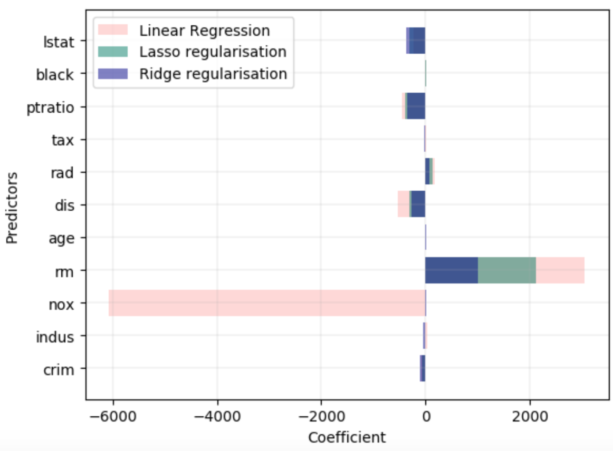

Key Word(s): Lasso, Ridge, Error, Bias, Variance, Regularization, Generalization
Title :¶
Exercise: Simple Lasso and Ridge Regularization
Description :¶
The aim of this exercise is to understand Lasso and Ridge regularization.
For this we will plot the predictor vs coefficient as a horizontal bar chart. The graph will look similar to the one given below.

Data Description:¶
Instructions:¶
- Read the dataset and assign the predictor and response variables.
- Split the dataset into train and validation sets.
- Fit a multi-linear regression model.
- Compute the validation MSE of the model.
- Compute the coefficient of the predictors and store to the plot later.
- Implement Lasso regularization by specifying an alpha value. Repeat steps 4 and 5.
- Implement Ridge regularization by specifying the same alpha value. Repeat steps 4 and 5.
- Plot the coefficient of all the 3 models in one graph as shown above.
Hints:¶
sklearn.normalize() Scales input vectors individually to the unit norm (vector length)
sklearn.train_test_split() Splits the data into random train and test subsets
sklearn.LinearRegression() LinearRegression fits a linear model
sklearn.fit() Fits the linear model to the training data
sklearn.predict() Predict using the linear modReturns the coefficient of the predictors in the model.
mean_squared_error() Mean squared error regression loss
sklearn.Lasso() Linear Model trained with L1 prior as a regularizer
sklearn.Ridge() Linear least squares with L2 regularization
Note: This exercise is auto-graded and you can try multiple attempts.
# Import necessary libraries
%matplotlib inline
import pandas as pd
import numpy as np
import matplotlib.pyplot as plt
from sklearn import preprocessing
from sklearn.linear_model import Lasso
from sklearn.linear_model import Ridge
from sklearn.metrics import mean_squared_error
from sklearn.linear_model import LinearRegression
from sklearn.model_selection import train_test_split
from sklearn.preprocessing import PolynomialFeatures
Reading the dataset¶
# Read the file "Boston_housing.csv" as a Pandas dataframe
df = pd.read_csv("Boston_housing.csv")
# Select a subdataframe of predictors mentioned above
X = df[___]
# Normalize the values of the dataframe
X_norm = preprocessing.normalize(___)
# Select medv as the response variable
y = df[___]
Split the dataset into train and validation sets¶
### edTest(test_random) ###
# Split the data into train and validation sets with 70% train data and
# random_state as 31
X_train, X_val, y_train, y_val = train_test_split(___)
Multi-linear Regression Analysis¶
# Initialize a Linear Regression model
lreg = LinearRegression()
# Fit the linear model on the train data
lreg.fit(___)
# Predict on the validation data
y_val_pred = lreg.predict(___)
# Use the mean_squared_error function to compute the validation mse
mse = mean_squared_error(___,___)
# Print the MSE value
print ("Multi-linear regression validation MSE is", mse)
Obtaining the coefficients of the predictors¶
# Helper code to create a dictionary of the coefficients
# along with the predictors as keys
lreg_coef = dict(zip(X.columns, np.transpose(lreg.coef_)))
# Linear regression coefficients for plotting
lreg_x = list(lreg_coef.keys())
lreg_y = list(lreg_coef.values())
Implementing Lasso regularization¶
# Create a Lasso Regression model with alpha as 0.008
lasso_reg = Lasso(___)
# Fit the model on the train data
lasso_reg.fit(___)
# Predict on the validation data using the trained model
y_val_pred =lasso_reg.predict(___)
Computing the MSE with Lasso regularization¶
# Calculate the validation MSE
mse_lasso = mean_squared_error(___,___)
# Print the validation MSE
print ("Lasso validation MSE is", mse_lasso)
# Hhelper code to make a dictionary of the predictors
# along with the coefficients associated with them
lasso_coef = dict(zip(X.columns, np.transpose(lasso_reg.coef_)))
# Get the Lasso regularisation coefficients for plotting
lasso_x = list(lasso_coef.keys())
lasso_y = list(lasso_coef.values())
Implementing Ridge regularization¶
# Create a Ridge Regression model with alpha as 0.008
ridgeReg = Ridge(___)
# Fit the model on the train data
ridgeReg.fit(___)
# Predict the trained model on the validation data
y_val_pred = ridgeReg.predict(___)
Computing the MSE with Ridge regularization¶
### edTest(test_mse) ###
# Calculate the validation MSE
mse_ridge = mean_squared_error(___)
# Print he valdiation MSE
print ("Ridge validation MSE is", mse_ridge)
Obtaining the coefficients of the predictors¶
# Helper code to make a dictionary of the predictors
# along with the coefficients associated with them
ridge_coef = dict(zip(X.columns, np.transpose(ridgeReg.coef_)))
# Ridge regularisation coefficients for plotting
ridge_x = list(ridge_coef.keys())
ridge_y = list(ridge_coef.values())
Plotting the graph¶
# Helper code below to visualise your results
plt.rcdefaults()
plt.barh(lreg_x,lreg_y,1.0, align='edge',color="#D3B4B4", label="Linear Regression")
plt.barh(lasso_x,lasso_y,0.75 ,align='edge',color="#81BDB2",label = "Lasso regularisation")
plt.barh(ridge_x,ridge_y,0.25 ,align='edge',color="#7E7EC0", label="Ridge regularisation")
plt.grid(linewidth=0.2)
plt.xlabel("Coefficient")
plt.ylabel("Predictors")
plt.legend(loc='best')
plt.xlim(-6500,3500)
plt.show()
⏸ How does the performance of Lasso and Ridge regression compare with that of Linear regression?¶
### edTest(test_chow1) ###
# Submit an answer choice as a string below
answer1 = '___'
⏸ Change the alpha values for both, Lasso and Ridge, to 1000. What happens to the coefficients?¶
### edTest(test_chow2) ###
# Submit an answer choice as a string below
answer2 = '___'